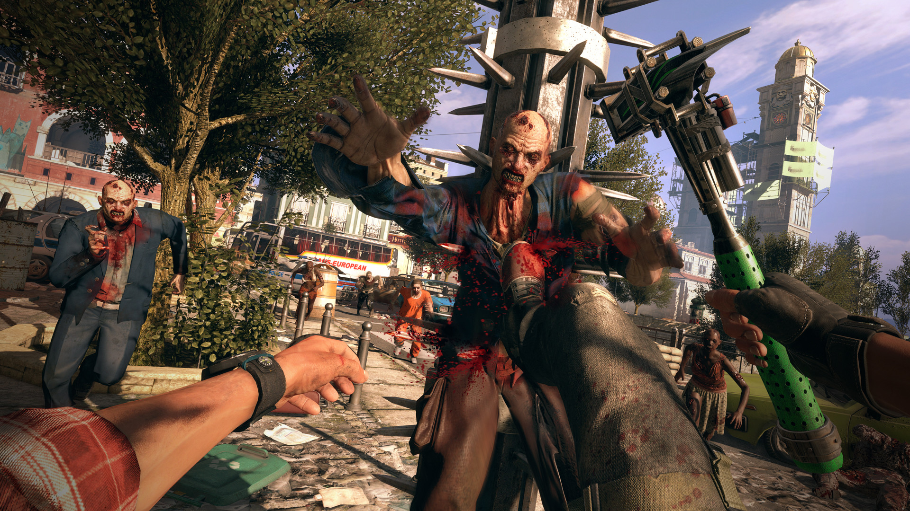
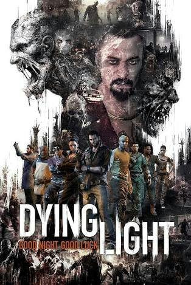
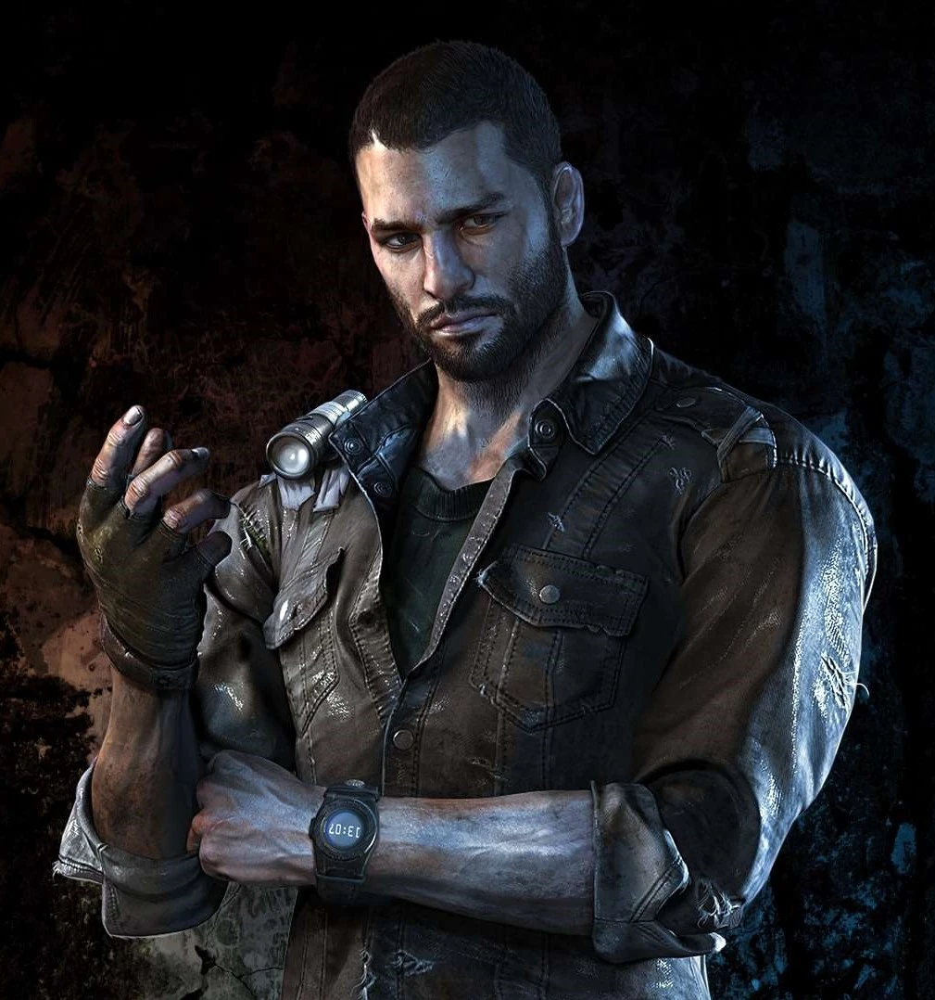
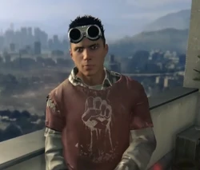
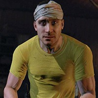

Na cidade de Harran, um misterioso surto viral transformou a maioria da população em criaturas zumbis hiper-agressivas, forçando o Ministério da Defesa de Harran a colocar em quarentena em partes da cidade. O Global Relief Effort (GRE) ajuda os sobreviventes que ainda estão presos na cidade, fornecendo suprimentos regularmente. O GRE contrata Kyle Crane para se infiltrar em Harran, a fim de recuperar um arquivo confidencial roubado por Kadir Suleiman, que ele está usando como alavanca para chantageá-los, com a ameaça de divulgá-lo caso algo lhe aconteça. Crane é lançado em Harran, onde ele é emboscado por uma gangue de bandidos hostis. Como o ataque infectado, Crane é mordido e infectado, mas resgatado por Jade Aldemir (Nazneen Contractor) e Amir Ghoreyshi (Roy Vongtama). Amir se sacrifica para salvar Jade e Crane. Jade o leva para um santuário de sobreviventes chamado Torre. Crane acorda e é apresentado a Rahim Aldemir (Suraj Partha), o irmão mais novo de Jade. Rahim ensina a Crane algumas noções básicas de parkour e envia-o para Spike (Kevin Daniels), que lhe dá sua primeira tarefa como um corredor da torre. Crane descobre que a Torre, que procura ajudar outros sobreviventes, está sendo assediada por uma gangue de bandidos liderados por um impiedoso senhor da guerra chamado Rais, que rouba e acumula os suprimentos dos airdrops da GRE, incluindo Antizina; uma droga que suprime os sintomas da infecção e retarda o processo de se transformar em um zumbi. Depois de Harris Brecken, líder da torre quase ser morto por um corredor rival em uma missão para recuperar uma queda de Antizina, a necessidade da droga na Torre se torna imensa. Guindaste voluntário e consegue chegar a um lançamento aéreo contendo Antizina, mas apesar da extrema necessidade do remédio pelos sobreviventes, Crane é instruído pelo GRE para destruir o lançamento aéreo, instruindo-o a chegar a Rais para comprar a droga e possivelmente confirmar sua identidade. Crane relutantemente cumpre e mente para a Torre que os suprimentos foram saqueados.
Chateado, Crane decide fazer as tarefas de Brecken e de fazer um acordo com a Rais. Ao conhecer Rais, Crane é capaz de confirmar que ele é de fato Suleiman. Ele realiza uma série de tarefas antiéticas para Rais, sob a suposição de que ele será recompensado com duas caixas de Antizina. Crane é incapaz de localizar o arquivo, e mais tarde é traído por Rais, que só lhe dá cinco frascos de Antizina. Mais tarde, ele interrompe os negócios com o GRE quando eles interrompem o fornecimento e se recusam a ajudar a Torre. A situação na torre piora, e um andar inteiro é fechado quando ocorre um surto que leva a muitas mortes, incluindo várias crianças. Na esperança desesperada de encontrar Antizina, Crane e Jade fazem um ataque a uma instalação de armazenamento de suprimentos administrada por Rais, que antigamente era uma escola. Eles não encontram Antizina, mas sim explosivos plásticos, que eles escolhem confiscar para impedir que Rais os use no futuro. Enquanto fazia um recado, Rahim diz a Crane que ele e Omar (Emmerson Brooks) estavam planejando bombardear um ninho volátil com os explosivos encontrados na escola. Crane se opõe a esse plano, mas depois de descobrir que Rahim saiu da Torre para plantar os explosivos de qualquer maneira, ele corre atrás dele. Ao alcançá-lo, ele descobre que Omar está morto, enquanto Rahim foi ferido. Ele então executa os planos de Rahim, resultando na destruição de todos os infectados no ninho. Quando ele volta para Rahim ele descobre que ele foi realmente mordido e se transformou enquanto Crane estava fora, forçando Crane a quebrar o pescoço de Rahim quando ele atacou Crane. Crane retorna à torre para informar Brecken das notícias; Jade ouve e, visivelmente aborrecida, faz as tarefas sozinha.

Enquanto isso, um cientista da Torre chamado Dr. Imran Zere (Roger Aaron Brown), que estava tentando desenvolver uma cura para o vírus, é seqüestrado por Rais, levando Crane a tentar uma missão de resgate. Crane também é capturado por Rais, que obriga Crane a lutar em uma arena improvisada contra grupos de infectados, antes de revelar que o arquivo que ele roubou contém prova de que o GRE pretende vender o vírus em vez de desenvolver uma cura e libera o arquivo para o público . O Crane consegue escapar antes de ser executado e, no processo, corta a mão de Rais. O Dr. Zere é morto na tentativa de resgate, mas consegue dizer a Crane que ele havia confiado sua pesquisa a Jade, que é encarregado de entregá-lo a outro cientista chamado Dr. Allen Camden (Dan Gilvezan). Enquanto Crane procura Jade, ele descobre que o Ministério da Defesa está planejando bombardear Harran em um esforço para erradicar completamente o surto, alegando que não há sobreviventes restantes na cidade. Ele consegue reativar uma torre de rádio e transmite uma mensagem para o mundo exterior, frustrando o plano do Ministério. Jade é capturada por Rais, que também rouba a pesquisa do Dr. Zere. Crane consegue resgatar Jade e recuperar uma parte da pesquisa do Dr. Zere, mas Jade admite que ela foi mordida, e pede ao Crane para parar Rais. Jade então sucumbe à ferida, forçando Crane a misericordiosamente a matar, também quebrando o pescoço dela como ele fez com seu irmão. Depois de matar o segundo em comando de Rais, Tahir (Michael Benyaer) com seu próprio facão, Crane entrega as amostras de tecido ao Dr. Camden, que acredita estar muito próximo da cura, mas precisa do resto dos dados do Dr. Zere. . Crane então descobre que Rais fez um acordo com a GRE, na qual ele entregará os dados da pesquisa do Dr. Zere a eles em troca da extração de Harran. Crane então invade o quartel-general de Rais (cheio de infectados) e o enfrenta no topo de um arranha-céu, exatamente quando um helicóptero GRE aparece, eventualmente apunhalando Rais no pescoço e jogando-o para fora do prédio. Ele recupera os dados da pesquisa e decide entregá-la ao Dr. Camden em vez do GRE, com a intenção de ficar em Harran para ajudar os sobreviventes restantes.
Imformações
Gameplay
É um jogo do gênero survival horror, em conjunto com um vasto e perigoso mundo aberto. Durante o dia, os jogadores percorrem em um ambiente urbano expansivo invadido por um surto vicioso, procurando pelo mundo suprimentos e elaborando armas para se defender contra a crescente população infectada. À noite, o caçador torna-se caçado, os infectados tornam-se agressivos e mais perigosos. Mais assustador são os voláteis (uma espécie de zumbi muito mais agressiva e forte que os tradicionais, porém fracos à luz UV) que aparecem somente após o anoitecer. Os jogadores devem usar tudo em seu poder para sobreviver até a primeira luz da manhã.

Dying Light logo
das características marcantes do jogo é a forma como a personagem se movimentará no ambiente, claramente o seu estilo foi inspirado no parkour, possibilitando que sejam feitos saltos entre edifícios, escalar muros e até usar como apoio os corpos de zumbis para escapar.
Em Dying Light haverá a possibilidade de partidas online com multiplayer de até quatro jogadores. Na sua pré estreia será disponibilizado um pacote especial para que o jogador tenha a possibilidade de tomar o controle como um zumbi modificado, com o objetivo de destruir jogadores com personagens humanas.
Desenvolvimento e lançamento
No início Dying Light começou como o que seria uma continuação de Dead Island, mas a produtora acrescentou muitas funcionalidades diferentes, resolvendo lançar como um jogo separado da série.
princípio foi anunciado que Dying Light seria lançado em 2014, mas devido à possibilidade de expandir o jogo e incluir grandes inovações ao gênero de jogo de zumbi, o seu lançamento foi adiado para 27 de janeiro de 2015
Personagens

Kyle Crane

Rahim Aldemir

Harris Brecken